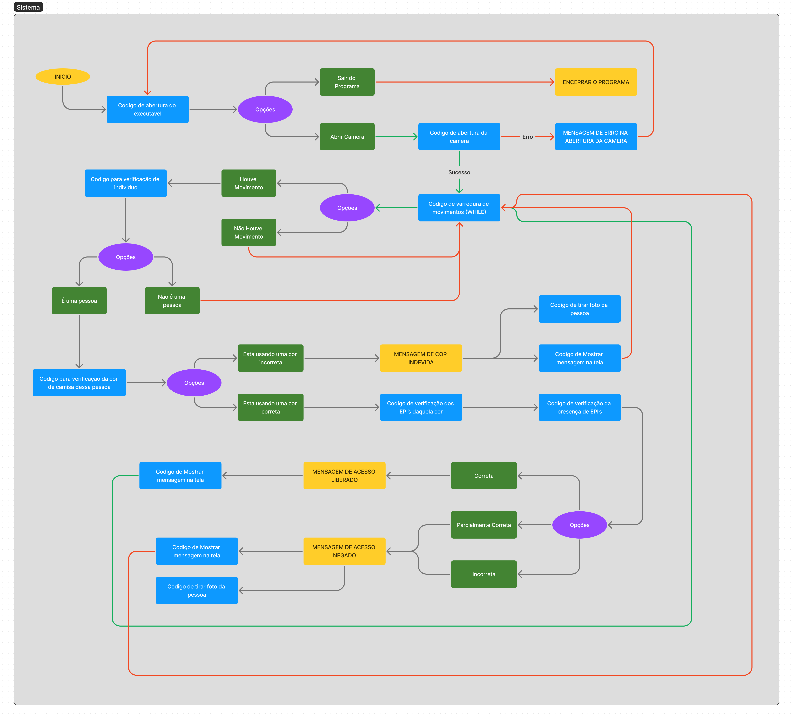

TEMA: Analise condicional do uso de EPI's por identificação de cores da roupa.
Neste trabalho, desenvolvemos um sistema de detecção de rostos, capacetes e coletes em tempo real usando uma câmera de vídeo. O objetivo é verificar se um indivíduo está usando equipamento de segurança adequado (capacete e colete) por um período de 4 segundos antes de conceder acesso a uma área particular. Isso é especialmente útil em locais de trabalho industriais ou de construção onde o uso de equipamento de segurança é obrigatório. O objetivo é monitorar o uso correto desses itens de segurança em um ambiente específico.
O sistema é construído usando a linguagem de programação Python e a biblioteca OpenCV para processamento de imagem e vídeo. O método de detecção de rosto é baseado em cascata de classificadores de Haar, uma abordagem eficaz e amplamente usada para a detecção de objetos em imagens.
O sistema processa cada quadro do vídeo da seguinte forma:
O código foi criado pensando em um cenário específico, ou seja ele irá funcionar apenas para o modelo que nós desenvolvemos. Caso tente ser usado em outro objetivo ele pode apresentar falhas.(por exemplo: no nosso caso o capacete é branco, ou seja se for tentar capturar as imagens dos funcionarios em um fundo branco, o codigo não irá funcionar)
O cenário escolhido, foi um cenário onde a câmera ficará em cima do local onde os funcionários irão bater o ponto, numa proximidade de até 50cm da câmera. Resumindo, ele caminhara até o local de batimento de ponto, virara para a câmera e nesse tempo a câmera sera capaz de analisar se ele esta usando o capacete e o colete, alem disso ela contara quantos funcionarios passam no local. Caso o mesmo esteja usando os equipamentos, tera um tempo de 4 segundos de fidelidade, ou seja caso ela detecte por mais de 4 segundos os equipamentos, o sistema identificara que ele esta usando corretamente os itens, e ira liberar seu acesso. Caso contrario, ele ira ficara tirando snapshots do funcionario, e aplicara tambem um filtro de nitidez para melhorar a imagem
Como o código envolve muitas variavéis de tempo, isso acabou atrasando um pouco o desenvolvimento, por ser algo complexo tivemos que trabalhar bastante para deixar tudo encaixado de maneira certa, sem que um tempo impactasse o outro no decorrer do código.
O código pode apresentyar falhas ao depender da luz, e do cenário de fundo. pois como ele identifica duas cores(branco e vermelho), se o fundo estiver em uma dessas cores, ele ira falhar.
O sistema foi capaz de detectar com sucesso rostos, capacetes e coletes em tempo real. Ele conseguiu capturar imagens sempre que as condições de segurança não eram atendidas e só concedia acesso quando as condições de segurança eram atendidas por um período de 4 segundos. O uso de um filtro de nitidez também melhorou a visibilidade dos detalhes na imagem capturada. No entanto, a detecção de capacetes e coletes é baseada na cor e, portanto, pode ser afetada por variações de iluminação. Trabalhos futuros poderiam explorar o uso de técnicas mais avançadas para a detecção de capacetes e coletes, como a detecção de objetos com base em aprendizado profundo.